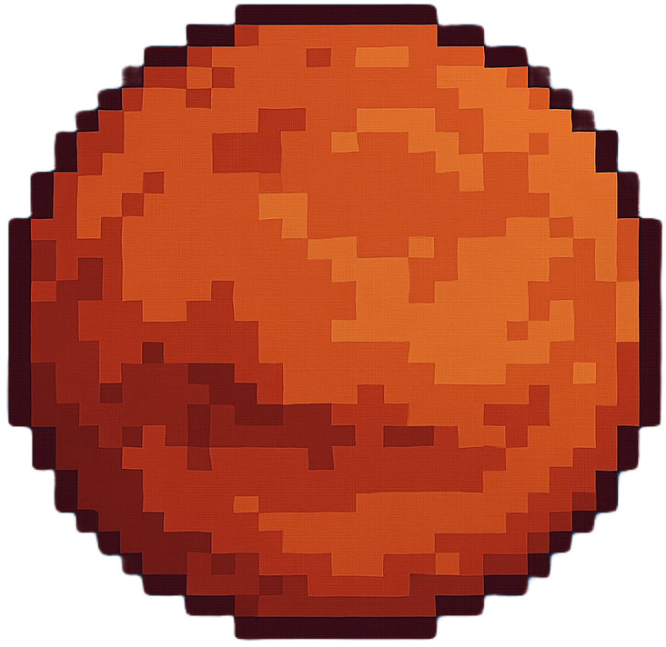
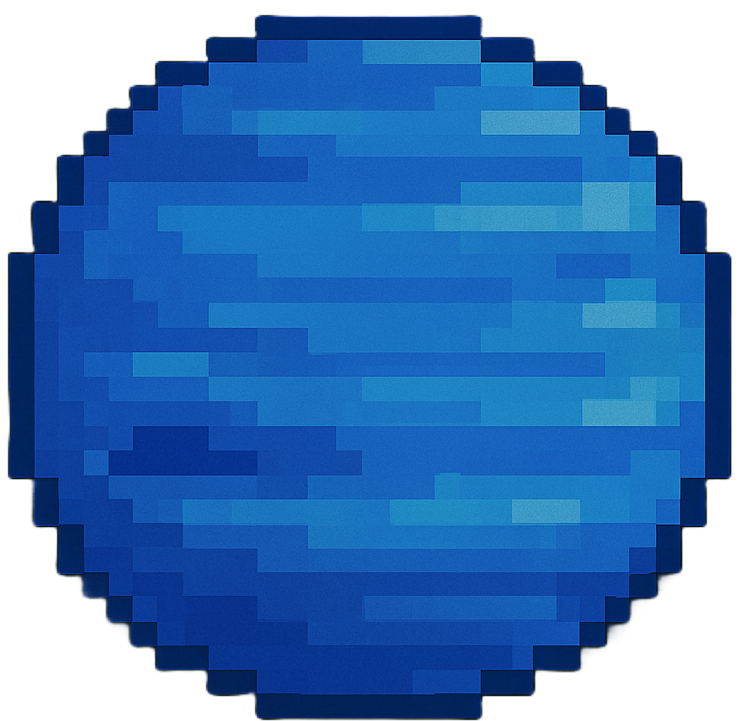

The n-Body Problem Simulation
Solutions approximated with Runge-Kutta method and state augmentation
The 3-Body System
\[
\begin{aligned}
\ddot{\boldsymbol{r}}_1 &= -Gm_2\frac{\boldsymbol{r_1}-\boldsymbol{r_2}}{|\boldsymbol{r_1}-\boldsymbol{r_2}|^3} -Gm_3\frac{\boldsymbol{r_1}-\boldsymbol{r_3}}{|\boldsymbol{r_1}-\boldsymbol{r_3}|^3}\\
\\
\ddot{\boldsymbol{r}}_2 &= -Gm_1\frac{\boldsymbol{r_2}-\boldsymbol{r_1}}{|\boldsymbol{r_2}-\boldsymbol{r_1}|^3} -Gm_3\frac{\boldsymbol{r_2}-\boldsymbol{r_3}}{|\boldsymbol{r_2}-\boldsymbol{r_3}|^3}\\
\\
\ddot{\boldsymbol{r}}_3 &= -Gm_1\frac{\boldsymbol{r_3}-\boldsymbol{r_1}}{|\boldsymbol{r_3}-\boldsymbol{r_1}|^3} -Gm_2\frac{\boldsymbol{r_3}-\boldsymbol{r_2}}{|\boldsymbol{r_3}-\boldsymbol{r_2}|^3}
\end{aligned}
\]
Click and drag planets onto the canvas, and click start to begin the simulation. You must
select a simulation speed before running. Reset the simulation to change it.


Simulation speed
Slow
Normal
Fast
Click to start simulation
Reset Simulation
Month: 1